Social
Two LinkedIn pages, planned like a publication.
The Trelleborg Marine & Infrastructure company page and the Gas Transfer showcase page. I plan the calendar, build the creative, write the copy and report on what to change next month.
Results
- 30,110company page followers, up 17.3% year on year
- 13.9%average engagement rate on the company page, up 2.0 points
- 3.2KGas Transfer page followers, up 12.8% year on year
- 17.5%average engagement rate on the Gas Transfer page, up 6.3 points
Followers as of November 2026. Growth and engagement are year to date September 2026 against 2025. Over three years, followers grew 85%.
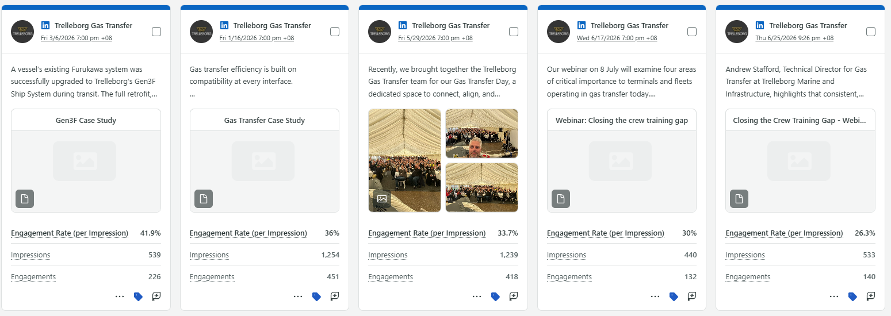
What works
What the reporting has taught us, and what the plan now does because of it.
Documents beat photos
Document posts average 37% engagement against 8% for photos, so people and customer-outcome stories now go out as documents.
Field stories with a named engineer
"Four days at sea", an upgrade told through the engineer who did it, became the Gas Transfer page's best post of the year.
People first
A Women in Maritime document was the company page's top post of the quarter. Event recaps work best when they name the people and partners.
Creative
House templates approved by Trelleborg Group, and a Spanish carousel from the LATAM brand campaign. Product and project videos are on the Video page.
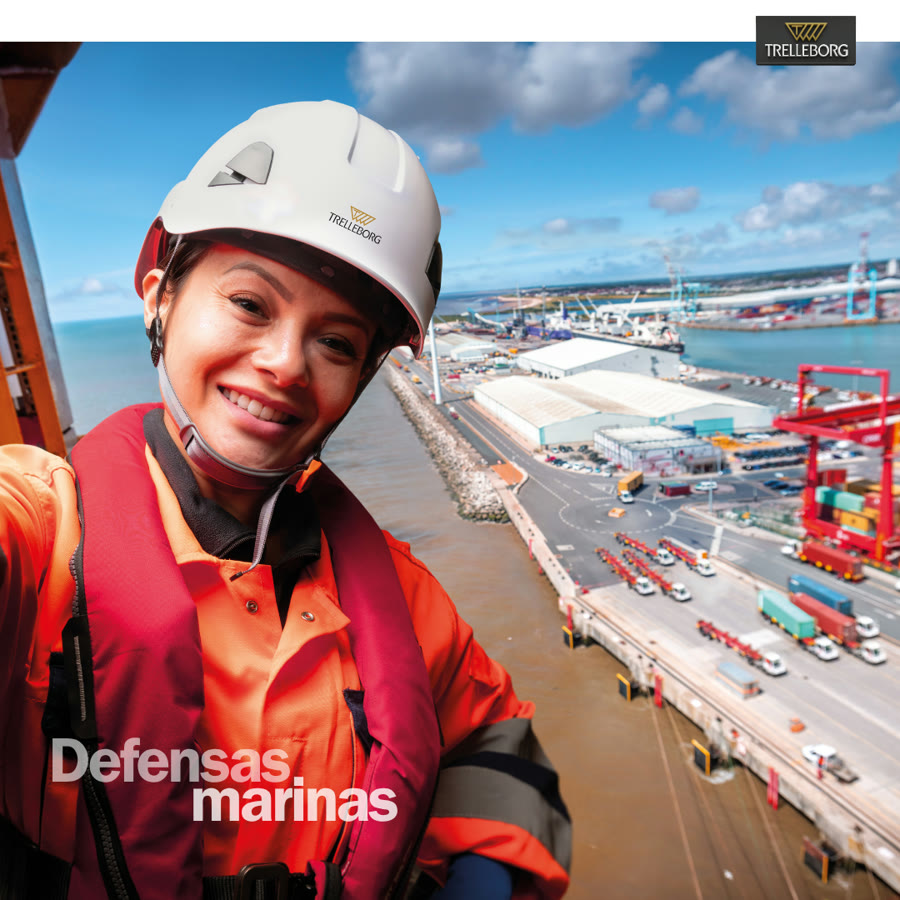
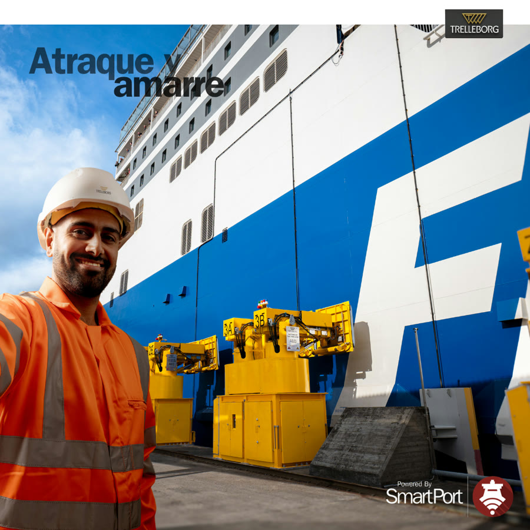
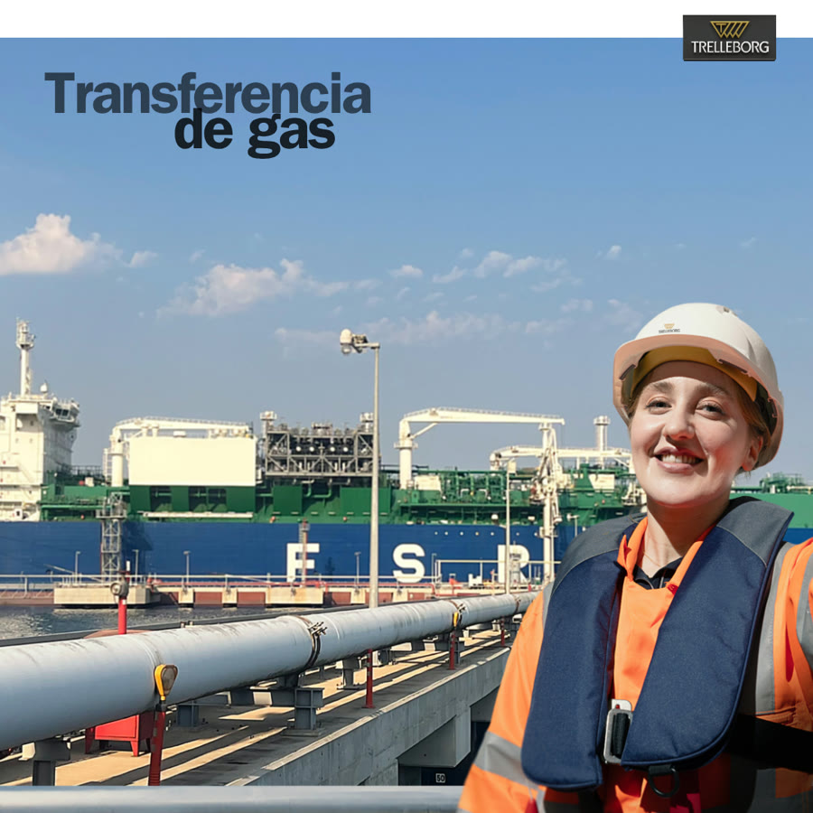
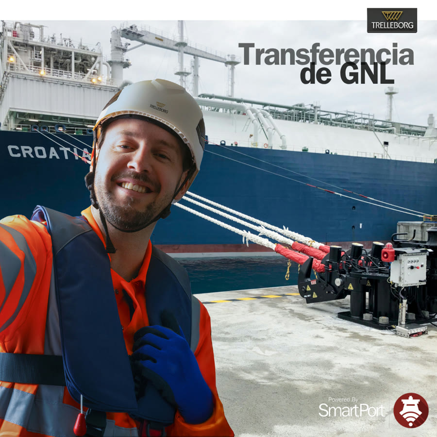
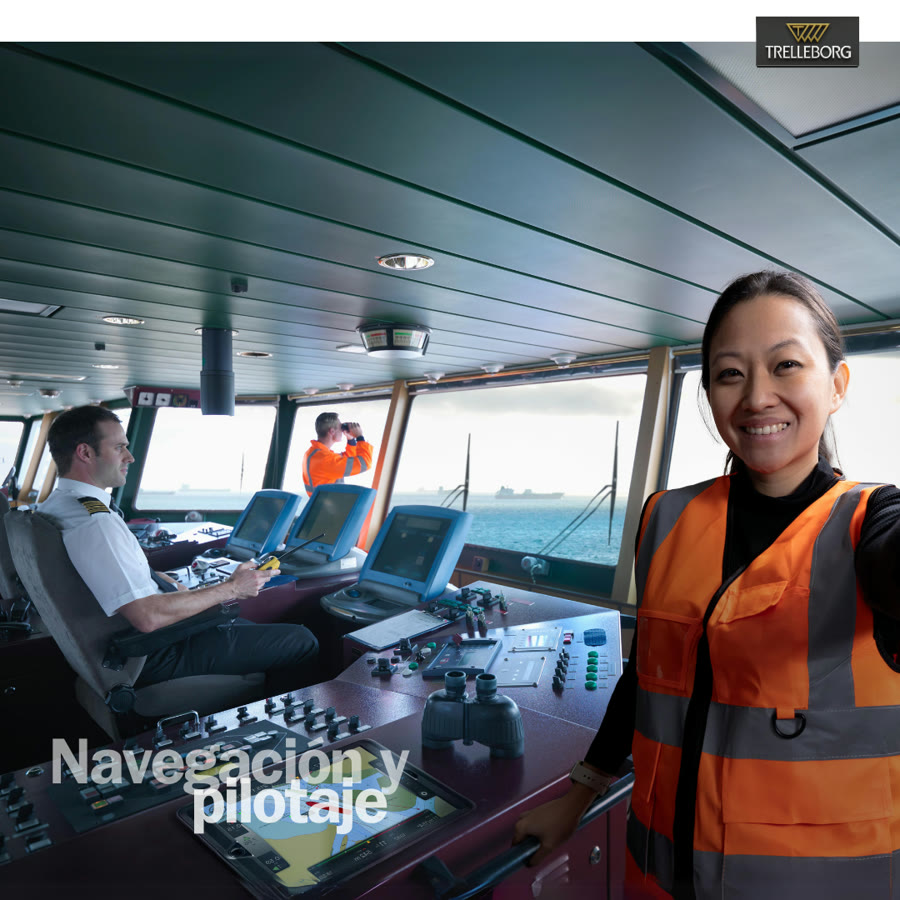
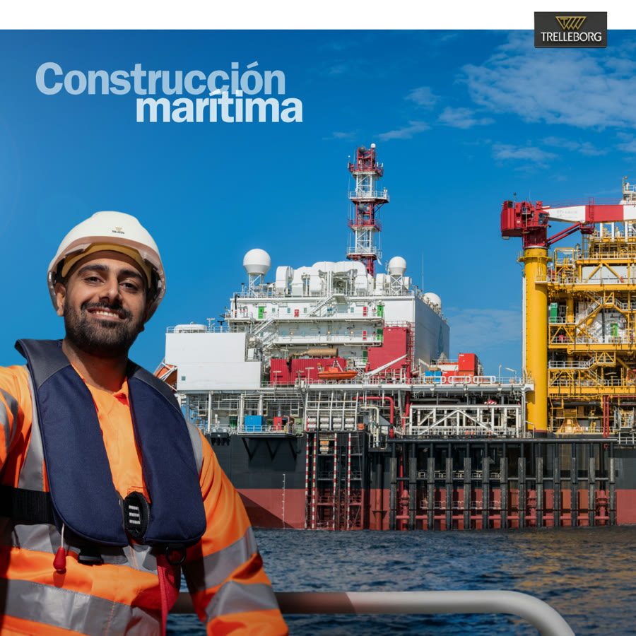
Spanish carousel from the LATAM brand campaign. Scroll sideways for all eight slides.
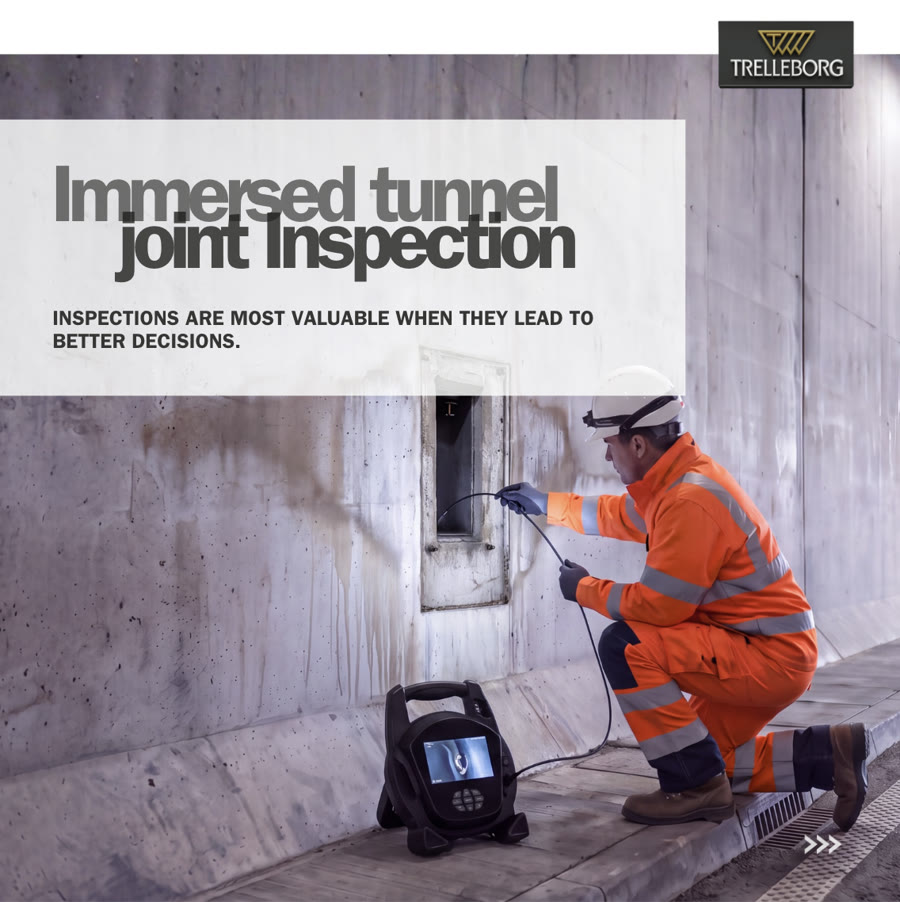
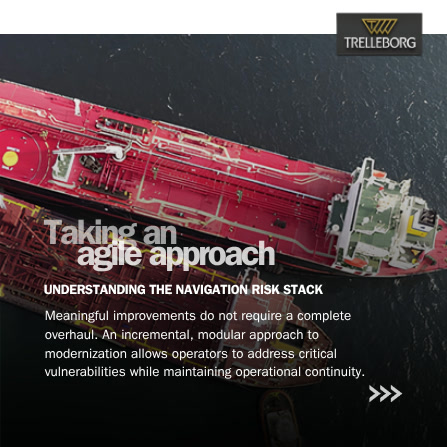
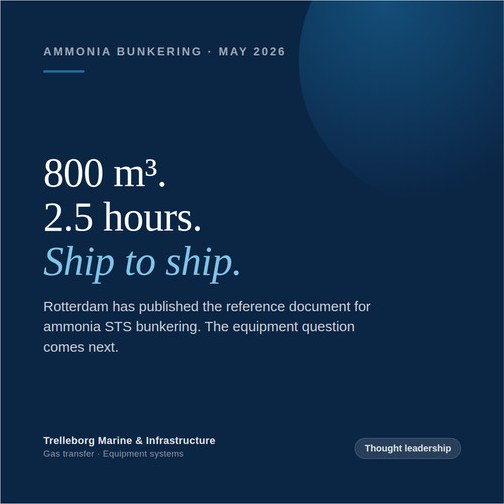
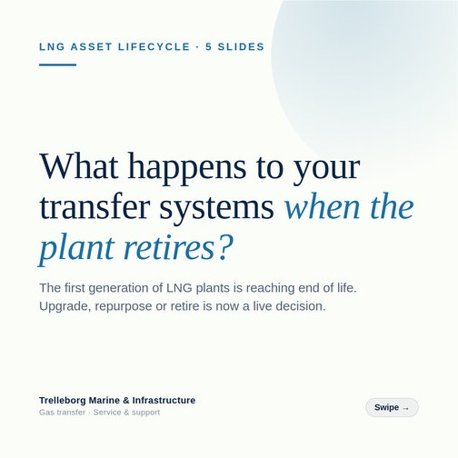
Series
Meet the Pioneers
Colleagues across the Americas, in their own words. See the campaign.
Women in Maritime
Careers and mentors in the industry, told as documents.
Faces of Gas Transfer
The engineers and service teams behind the Gas Transfer business.
Earlier roles
Social work from Blue Ant Media and Vuulr, before Trelleborg.